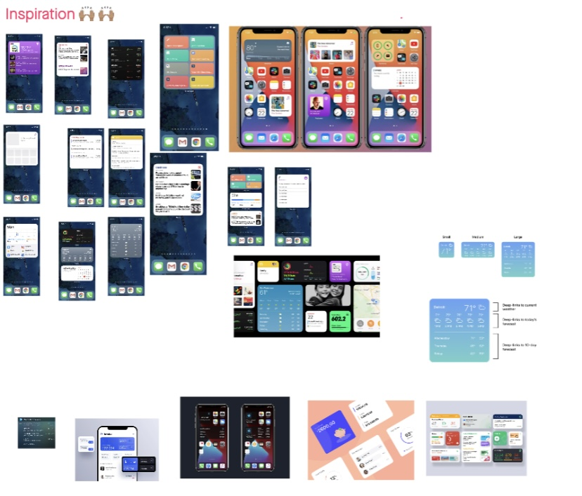
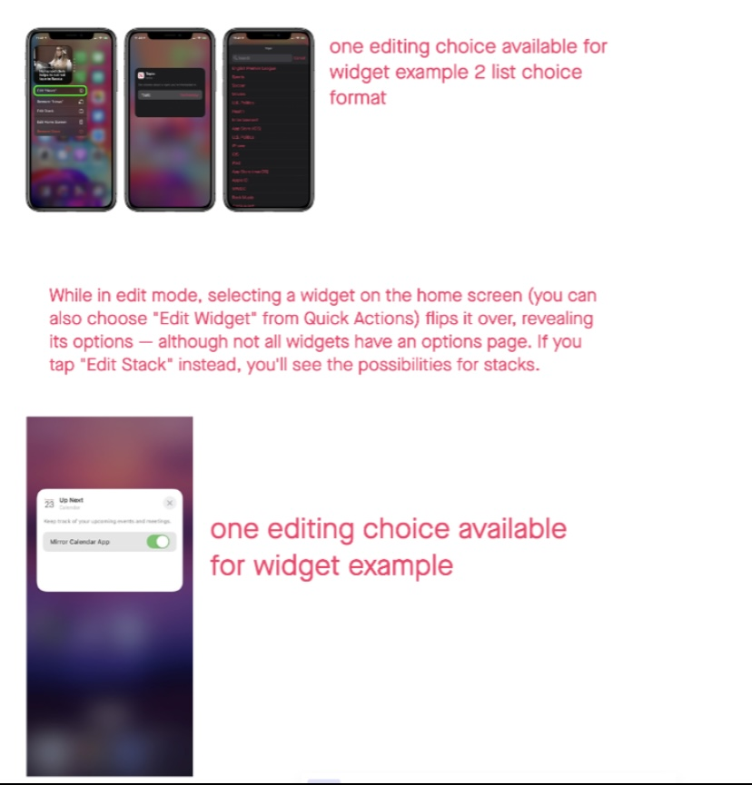
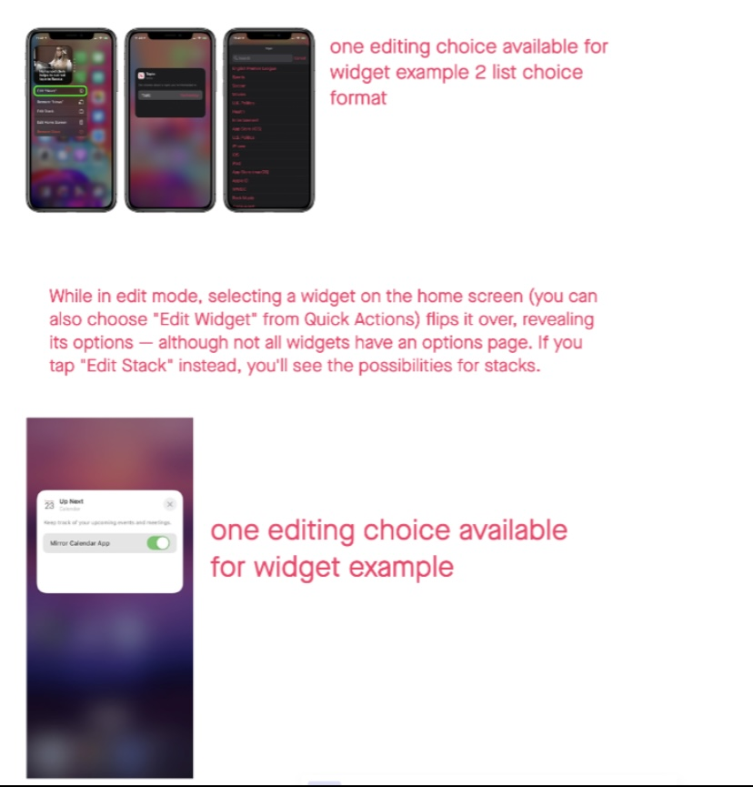
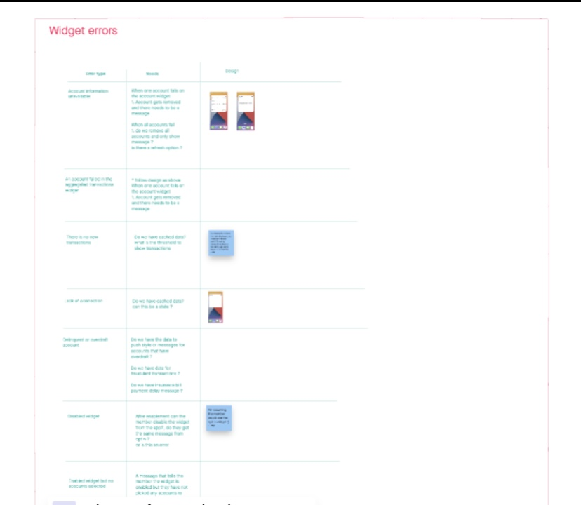
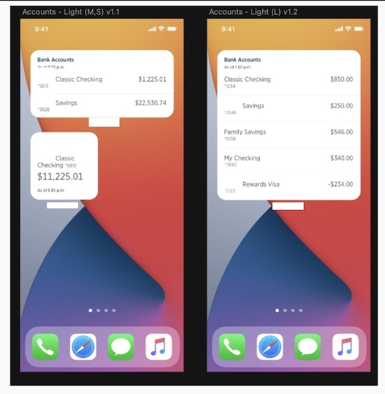

iOS Widgets
iOS widgets for financial institution.
Role
Lead UX/UI Designer. In charge of designing user experience and UI elements
Overview
Widgets display content without login into the app. In iOS and iPadOS, the widget gallery also supports widget stacks, including a Smart Stack. A stack contains up to 10 same-size widgets; people view one widget at a time by scrolling through the stack. A Smart Stack automatically rotates through the stack of widgets, displaying the widget most likely to be relevant in the current context. Smart Stacks aren't available on the Lock Screen on iPhone and iPad.
Look for a simple idea that’s clearly related to your app’s main purpose. In each size, display only the information that’s directly related to the widget’s main purpose. In larger widgets, you can display more data — or more detailed visualizations of the data — but it’s crucial to stay focused on the widget’s purpose.
Avoid creating a widget that only launches your app. People appreciate widgets because they provide instant access to meaningful content. Opt for dynamic information that changes throughout the day. If a widget content never appears to change, people may not keep it in a prominent position. Although widgets update from minute to minute, it's important to find ways to keep their content fresh to invite frequent viewing.
Requirements gathering
Widgets come in different sizes and I provided design for small, medium , large and extra large which at the time where the sizes provided from apple.
For the project that I worked on the organization had the desired to update the financial iOS widgets to match the then new iOS 14 widgets design. At the time of the ask there was very small information on these widgets as they had just being released in the OS.
For the organization it was important that their users had quick access to their products and still maintain a sense of security as the data provided would be personal financial information. At the same time it was important to maintain brand representation while keeping up with industry trends and be easily recognizable.
The work also consisted in providing guidance to the developers on how to create the editing environment where and how would they ask the user to choose what products to select to showcase in their widget.
Process
The first thing was to gather as much information as possible on what widgets are and how they are used, look at the guidelines provided by apple and start ideating on what type of data to show and how to provide and interesting visual treatment.
It is important to note that when widgets changed not only did the front end changed but the way that they are implemented also changed significantly so collaborating with native developers was important on a daily basis.
 

Collaborating with other designers I facilitated sessions where we would do rapid designs and then present, critique work and then take changes back to create more defined designs. While still creating designs I would work along side developer and business partners to make sure our designs where inside of technical possibilities and meeting business goals.
Prototype-User Testing
Using a simple click through prototype, we gathered some user feedback utilizing a class while collaborating with a professor where we were able to see how students will interact with the app. In the testing we ran through a list of tasks to see if any issues arose.
From the initial user feedback we made changes and adjusted some of the interactions that were difficult for users.
I was on point for updating everyone at all stages of the work and keep this work flowing. From the technical stand point I made sure we met at least biweekly and as needed when new information would surface from the developers research.
Widgets are a complex component that has many small interactions and since the organization has not created a language system for these I was in charge of making sure we had covered any and all possible situations and make sure we had UI and UX elements to provide to developers to implement
Starting by looking at how data is imported into the component and making a list of all possible scenarios, then consulting with technical parters to make sure we meet all requirements was essential before delivering a final design. For this project research was not needed as we collectively decided to use production to collect data and there is a future plan to test and grow some of this functionality.
Final Design
The final design required many collaborative sessions where designers, accessibility partners developers, legal and compliance. Since this design stepped out of the normal organization design language it was imperative that we would look at all the elements in the component to assure that we where working at the same rigor as the rest of the organizations UI elements.
These designs are planned to be release by summer 2023 time and be a positive element for thousands of users who already have an older version of widgets. These widgets also are ones of the few financial widgets in apple.
